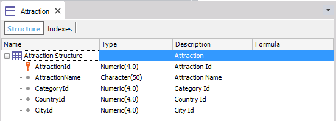
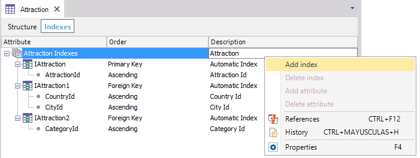
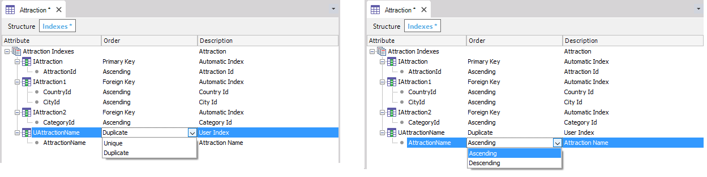

The table editor lets you browse the structure of a table and its indexes. In the Structure selector, it is a read-only editor.  In the Indexes selector, you can add and remove user indexes. To do so, just right-click on the root element (or any tree element), and select the "Add index" option.  Once the window is opened, you can add user indexes. For this, you need to enter an index name (GeneXus suggests "U" as the first character, but this is optional). Next, press ENTER and choose an attribute from the suggestions list. After that, you can choose the index order in the Database table (Ascending by default).  Note: you can select many attributes for the index composition.
|
| Backlinks | ||
| Add User Index | Category:Editors | Toc:GeneXus - Table of contents |
| Category:Table |